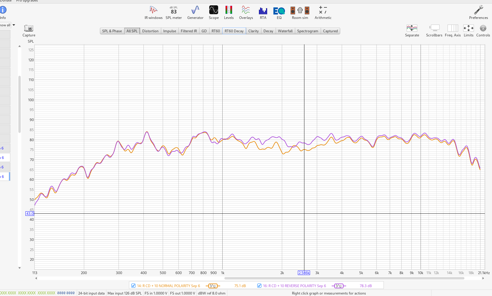
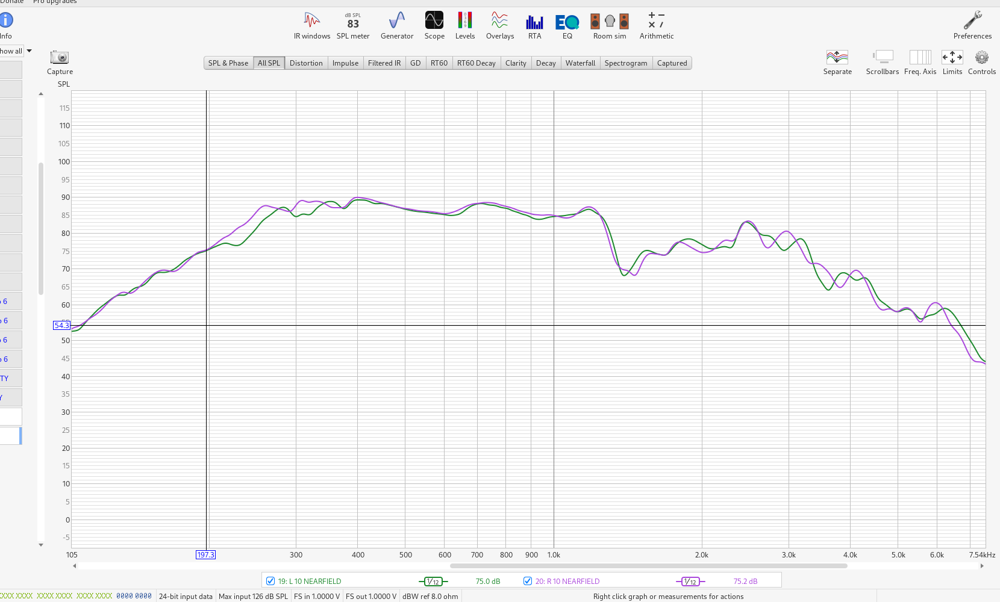
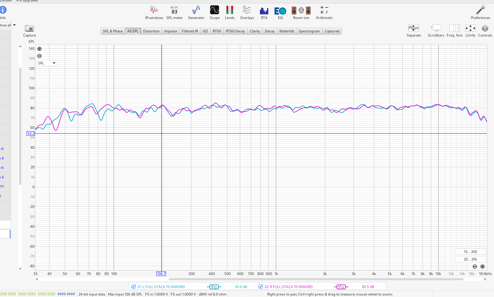

Room geometry, measurements, placement and treatment
This dossier is the primary home for room-level evidence. Individual speaker and system dossiers should link to these measurements rather than duplicating raw REW captures.
Updated 16 October 2026: the 6–7 September REW Gain Alignment conversation is recovered. Six original REW files and 22 of its 27 image attachments are available. The historical campaign included hundreds of owner-confirmed measurements; this source covers only one part. The dated baseline, numerical results and unresolved timing-reference conflict follow below.
| Parameter | Recorded value |
|---|---|
| Room II width | 3.50 m |
| Room II length | 9.0 m |
| Ceiling height | 2.40 m |
| Listening distance | Approximately 2.70 m |
| Speaker spacing | Earlier summary ~2.70 m; owner reported 12 inch cone centres 2.40 m on 6 September before inward move. Final spacing not verified. |
| HF horn centre height | Approximately 140 cm |
| 12 inch centre height | Approximately 70 cm |
| 10 inch centre height | Approximately 135 cm |
| 12 inch magnet to front wall | Approximately 140 cm |
| 12 inch cone to front wall | Approximately 160 cm |
| 10 inch cone to front wall | Approximately 140 cm |
| Placement annotation | “70 inward” L/R stacks; lateral placement, not a verified toe-in angle |
UMIK-1 USB measurement microphone.
REW used for full-stack left/right and 10 inch-only sweeps.
Initial proposal: pink noise at CD 3 kHz, mid 1 kHz and bass 100 Hz. The session instead proceeded after advice to use sine tones at 150 Hz, 1 kHz and 3 kHz; the owner confirmed levelling, without recording final individual tone readings. See source messages 3, 11, 25, 28 and 29.
Sweep level recorded as -12 dBFS with approximately 71 dB at the microphone.
Nearfield sweep investigation focused on 500-600 Hz.
A deep 80-90 Hz dip/null is associated with room interaction and SBIR.
An earlier 12 inch response dip was discussed around 50 Hz.
A 10 inch response feature around 500-600 Hz appeared at the seat but disappeared after moving the stacks away from the side walls, showing that nearfield and listening-seat results were not equivalent.
A possible 12-to-10 handoff depression around 230-280 Hz was identified as a hypothesis requiring fixed-position sweeps.
Subjective listening reports describe immediate snare attack, convincing percussion timing and bodily kicks without masking the drum solo.
10 cm Rockwool ceiling cloud with a 10 x 2 cm frame.
Candidate cloud sizes: 1200 x 600 mm, 1200 x 800 mm or 2000 x 1000 mm.
Focus treatment effort on the ceiling cloud and front-wall diffusion.
Do not use room EQ as the first response; establish placement, cabinet geometry and crossover alignment before electronic correction.
Repeat fixed-position 12 inch-only, 10 inch-only and combined sweeps.
Repeat the combined sweep with reversed 10 inch polarity to test the suspected handoff issue.
Run a completed-waveguide 10 inch sweep from 100 Hz to 5 kHz at approximately 1 m on the acoustic axis.
Run a 10 inch plus CD sweep from 800 Hz to 4 kHz at 0.7-1 m.
Record speaker positions, toe-in, microphone position, source chain, amplifier and crossover settings with every REW capture.
Six original REW files are now indexed in the acoustic project page. Resume by matching their trace names to the recovered chronology and resolving timing-reference metadata per capture. Do not interpret unrecovered campaign evidence as tests not undertaken.
Evidence now includes the shared conversation, historical file-derived numerical outputs, six raw REW files and 22 recovered image attachments. Five 7 September impulse/phase images remain inaccessible. Numerical values quoted from historical tool output are identified as such and have not been independently recomputed in this harvest.
Revision 2 • 16 October 2026. Primary historical source: REW Gain Alignment, shared conversation 6ad15ab7-8824-83eb-ab2f-4887aca9e51a. Session messages span 6–7 September 2026. All times below use Europe/Rome; original UTC timestamps and message UUIDs are retained in the source record.
This revision enriches the existing room dossier. It recovers experimental order, numerical results, accepted session settings and unresolved evidence. It does not establish the latest October physical configuration or imply that the wider measurement campaign lacked validation.
VERIFIED / AS-BUILT denotes explicit owner confirmation or directly visible configuration. MEASURED denotes a source measurement or displayed numerical reading; the carrier is stated. DECIDED denotes a recorded choice without proof of implementation. PROPOSED denotes advice or a future experiment. SUPERSEDED denotes a replaced configuration or interpretation. UNVERIFIED denotes unresolved conflicts. Historical assistant estimates remain attributed even when originally labelled “Certain”.
| Item | 6 September record | Evidence |
|---|---|---|
| Bass amplification | Pioneer SA-8100 power mode; controls bypassed | Owner m192, m198 |
| Mid amplification | Gainclone monoblocks on 10 inch drivers | Owner m192 |
| HF amplification | Aiyima A70 on CDs | Owner m192 |
| Upper crossover | Tweaked AliExpress fixed 12 dB Sallen–Key | Owner m235 |
| Nominal handoffs | ~300 Hz and ~1.9 kHz used in discussion | Historical context, m11, m207 |
| Future hardware | Second Pass 6-24, Aleph Mini on CDs, Ciuffoli on mids | PROPOSED / owner plans m200, m203 |
The successful reversed-CD polarity result belongs to this Sallen–Key configuration. It is not a validated setting for the subsequent Pass crossover arrangement. The original source explicitly corrects that attribution at m235 and m240.
The owner confirms hundreds of measurements across individual drivers, L/R, nearfield, listening position and full stacks. This recovered conversation includes 22 accessible images and five inaccessible later impulse/phase images. One attached raw file is explicitly identified in m37 as REW_06_09.mdat; matching other available files to this conversation remains a trace-index task.
6 September 17:22–18:11. The owner initially proposed acoustic levelling to account for unknown amplifier gain. Default microphone input caused no capture; owner m25 confirms selecting the actual hardware solved it. m29 confirms “done levelled”. The proposed 74 dB example is not a measured result. m33 reports about 71 dB at −12 dBFS, then specifies that sweep level for L, R and combined testing.
Historical file metadata output m100 records 48 kHz sampling, a 256k log swept sine, one sweep at −12.0 dBFS and “with no timing reference”. Frequency samples span 20.1416–20037.846 Hz, 957 points, 96 points/octave. The source input string is U18dB [plughw:2,0]. These are historical parser outputs, not freshly re-extracted metadata. The initial RTA screenshot names microphone calibration 7159251_90deg.txt; loading and orientation for every later trace are not proven.
MEASURED through historical file-derived output m104. Point values use interpolation in log frequency. Band means below are arithmetic means of dB samples on the logarithmic frequency grid, not energy averages. Rounded here to two decimals; complete original outputs are preserved.
| Trace | Reference | dB SPL | Band mean dB | Band Hz |
|---|---|---|---|---|
| L 12s* | 150 Hz | 74.81 | 75.92 | 120–220 |
| L10 | 1 kHz | 77.84 | 77.67 | 500–1500 |
| L CD | 3 kHz | 68.55 | 67.65 | 2500–6000 |
| R 12 | 150 Hz | 71.35 | 75.93 | 120–220 |
| R 10 | 1 kHz | 80.01 | 78.51 | 500–1500 |
| R CD | 3 kHz | 66.09 | 67.56 | 2500–6000 |
* L 12s is contaminated by the active CD and is invalid as an isolated LF trace. Owner m129 explicitly confirms re-taking it. At 10 kHz the initial trace was 74.31 dB versus R12 37.71 dB (m113). Do not delete the faulty trace from history or use it for isolated left crossover validation.
| Side and Hz | 10 inch dB | CD dB | Stack dB | Interpretation |
|---|---|---|---|---|
| L 3000 | 65.44 | 68.55 | 66.24 | 2.31 dB below CD alone |
| R 3000 | 70.79 | 66.09 | 69.22 | 1.57 dB below mid alone |
| R 400 | 80.43 | 37.62 | 82.05 | Bass 73.60 dB; sum +1.62 dB over mid |
Source m113. Initial stored labels: L 12s, L10, L CD, R CD, R 10, R 12, L Stack and R stack. Upper-band balance was subsequently adjusted and polarity-tested; these initial values are not final settings.
18:12–18:27. Owner re-took the contaminated L12 capture, then increased CD gain (m129, m134) and submitted full L/R stack take 2 (m138). The exact gain increment and control positions are not recorded. Advice varied from +5–6 dB to +4 dB on CDs and −1–2 dB on mids; these are proposals, not verified applied changes.
Historical graph readings m137: revised isolated CDs ~71–73 dB near 2 kHz, ~75 dB at 3 kHz and ~77–80 dB at 4–10 kHz, with ~1 dB L/R tracking. m141 describes full stacks mostly mid/high 70s from ~100 Hz to 10 kHz, with a remaining 1.5–3 kHz trough. m145 places the acoustic intersection around 2.0–2.3 kHz, with individual traces ~72–74 dB. These remain approximate historical graph interpretations, not newly digitised values.
Owner m146 explicitly identifies 1/12-octave smoothing. Advice to use no smoothing or 1/48 for crossover inspection was not demonstrated as implemented: the recovered normal/reversed screenshots themselves display 1/12. L/R agreement is visually strong above ~100–200 Hz; no exact tolerance over the whole band is established.
18:39–18:46. L10, LCD and their normal/reversed sums were submitted, followed by the right comparison (m150 and m159). The left graph clearly improves through the overlap when CD polarity is reversed. Historical estimate m158 around 2 kHz: mid ~75–76 dB, CD ~72–73 dB, normal sum ~75–76 dB, reversed sum ~80 dB. The 80.6 dB ideal sum cited there is a calculation, not a measurement.
| Direct right graph reading | Value |
|---|---|
| Cursor frequency | 2.586 kHz |
| Trace 14 R CD + 10 NORMAL POLARITY Sep 6 | 75.1 dB |
| Trace 16 R CD + 10 REVERSE POLARITY Sep 6 | 78.3 dB |
| Displayed difference | +3.2 dB |
| Visible smoothing | 1/12 octave |
MEASURED / directly visible in attachment to m159, 666e9581-dd23-4b67-8307-2d538955d106.png. m162 described ~3–5 dB benefit over ~1.6–3 kHz. After reversal, full-stack measurements 17 and 18 were supplied (m163); this is practical evidence of the tested reversed configuration, while the keep/freeze instruction at m191 is an assistant session handover rather than an explicit owner wiring statement.
At 19:15 owner m190 stopped the session. The contemporaneous handover retained reversed CDs for this network, frozen gains and inward placement, with remaining LF work below ~100 Hz. No final potentiometer readings, numeric gain offsets or durable later adoption are recorded in this source.
18:50. Owner m163 reports a large 10 inch dip around 500 Hz and 12 inch dip near 50 Hz. The 10-only plot shows a broad ~500–600 Hz depression on both sides, separating it from inter-driver crossover cancellation. m166 proposed a 20–30 cm nearfield test; that distance is a recommendation, not a confirmed microphone measurement.
18:56. Submitted traces 19 L 10 NEARFIELD and 20 R 10 NEARFIELD are smooth through 500–600 Hz and track closely (m167). Their different absolute SPL must not be compared directly with listening-position traces. The screenshot is 1/12 smoothed and shows cursor readings 75.0 and 75.2 dB at 197.3 Hz; these are one cursor point, not a broadband matching tolerance. A dip near 1.4 kHz remains visible and was not used to tune the HF crossover from nearfield.
| Quantity | Owner m175 |
|---|---|
| 12 inch magnet to front wall | ~140 cm |
| 12 inch cone to front wall | ~160 cm |
| 12 inch height from floor | ~70 cm |
| 10 inch cone to front wall | ~140 cm |
| 10 inch height from floor | ~135 cm |
| 12 inch cone centre spacing | 240 cm |
19:12. Owner m185 submits “70 INWARD L/R STACKS” and full-stack traces 21 and 22. This is a lateral placement annotation, not a verified 70-degree toe-in setting. The assistant inferred ~70 cm side-wall clearance, but the owner did not state the unit/reference explicitly. Final speaker spacing and exact movement are unresolved. The new curves visibly reduce the former ~500 Hz trough; residual LF L/R differences persist. At the displayed 196.7 Hz cursor, L is 81.0 dB and R is 82.5 dB; neither value is a band average.
Initial assistant model used 1.20 m front-wall distance: f=c/(4d)≈71 Hz and odd orders ~214, 357, 500, 643 Hz. This geometry assumption was superseded by owner m175. With 1.60 m bass cone distance, the same simplified estimate gives 53.6 Hz; with 1.40 m mid distance, ~61, 184, 306, 429, 551 Hz. A symmetric 3.50 m room and 2.40 m spacing imply ~0.55 m side clearance, yielding ~156 and 468 Hz. The inferred 0.70 m alternative yields ~123, 368 and 613 Hz. All are historical calculations using c=343 m/s, not measured cancellation frequencies or unique proof of cause.
Nearfield and lateral movement support a room/geometry contribution to the 500 Hz feature. The exact reflecting surface remains a hypothesis; floor reflection estimates used unconfirmed ear height ~0.90 m. Proposed 20 cm fore/aft tests were not completed in this conversation. The earlier common 80–90 Hz-null description is not universal: initial L/R LF traces differ substantially, and the corrected ~50–60 Hz feature must be retained alongside that history.
7 September 20:22–20:36. Owner returned to the previous day’s data for time alignment, asking which REW screen to share. Four impulse/phase screenshots in m262 and the phase overlay in m267 are referenced but inaccessible in the present file surface. Their original file IDs are retained in the source image register.
Historical raw-file metadata m100 says “with no timing reference” for the initial L12 object. Earlier m128 generalised this to the set. Later m266 interpreted a “Ref” impulse near −3 ms in a CD screenshot as possible acoustic timing reference. This cannot be resolved by accepting either assistant statement wholesale: different captures may differ, and that screenshot is unavailable. The exact reference mode and consistency for L10 and L CD take 2 remain UNVERIFIED. No measured delay in milliseconds or physical alignment offset was accepted in this source.
| Frequency | Normal polarity separation | After 180 degree reversal estimate |
|---|---|---|
| ~2.0 kHz | ~140–150 degrees | ~30–40 degrees |
| ~2.15–2.2 kHz | ~90–110 degrees | ~70–90 degrees |
| ~2.3 kHz | ~70–90 degrees | Not independently quantified |
Source m269, assistant visual estimates from inaccessible image m267. Filter/driver phase, propagation and room reflections are mixed. The values cannot establish pure acoustic delay. m266’s 2 kHz cycle conversions (0.500 ms/cycle, 0.250 ms/180 degrees, 0.125 ms/90 degrees, 0.0625 ms/45 degrees) and distance examples (0.10 ms≈34 mm, 0.20≈69 mm, 0.30≈103 mm) are calculations only. m269’s ~0.08 ms example and tens of microseconds to ~0.1 ms expectation are hypothetical, not selected settings.
The source stops after advice to open REW Alignment Tool with L10 and L CD take 2, inspect ~1.5–3 kHz (centre ~2.0–2.2 kHz), show delay/polarity/predicted sum and compare with the measured sum. No resulting Alignment Tool screen, selected delay or applied fore/aft displacement appears.
Owner m241 reports narrow stage width/depth and considers a ceiling cloud and front-wall panels, mainly diffusion. No installation is confirmed. Assistant m244 recommends keeping placement, adding treatment, measuring/listening again, then considering toe-in and small fore/aft changes. Its front-wall/depth, side-reflection/width and cloud/image-precision claims remain proposed interpretations, with no before/after treatment result in this source. Earlier dossier dimensions for a 10 cm Rockwool cloud remain inherited plans, not newly verified by this conversation.
The old dossier’s 230–280 Hz handoff hypothesis and reversed-10 suggestion are retained historical proposals. This source validates CD-polarity experimentation at the upper crossover; it does not establish a selected low-band polarity or a newly measured 230–280 Hz fault.
| Record | Status and reasoning | Sources |
|---|---|---|
| AC-D01 Acoustic gain matching | Implemented levelling confirmed; per-band readings and settings absent | m3, m25, m29, m33 |
| AC-D02 Reject contaminated L12 | SUPERSEDED capture; owner explicitly re-took it | m128, m129 |
| AC-D03 Raise CD gain | Change performed; exact increment unknown; further gain changes then discouraged | m134, m137, m141 |
| AC-D04 CD reversed polarity | Tested on L/R with improved sum; keep recommendation scoped to Sallen–Key | m150–162, m235, m240 |
| AC-D05 Inward placement | Owner submitted new placement and curves; exact “70” reference unresolved | m175, m185, m189 |
| AC-D06 Physical TA or delay | PROPOSED investigation; no final numeric setting recovered | m261, m266, m269 |
| AC-D07 Treatment | PROPOSED cloud/front-wall work; no installed state shown | m241, m244 |
6 September: amplifier reassignment before session → fix microphone selection → coarse acoustic levelling → eight initial isolated/stack traces → contaminated L12 replaced → CD gain raised → take 2 full stacks and isolated mid/CD comparisons → normal/reversed polarity tests on both sides → full reversed stacks → mid nearfield test → owner geometry correction → inward lateral placement and full stacks → owner stops. 7 September: review prior impulses/phase → timing-reference contradiction → proposed Alignment Tool investigation; source ends.
| Gap | Resolution and significance |
|---|---|
| Five inaccessible images | Recover four impulse/phase screenshots at m262 and overlay at m267; needed to inspect phase and Ref pulse directly. |
| Per-capture timing reference | Read metadata for L10 and L CD take 2; do not derive physical delay until reference consistency is established. |
| Final gains and placement | Control positions, meaning of “70 inward”, final spacing and mic coordinates are absent; later logs or owner record may resolve. |
| Raw file linkage | REW_06_09.mdat is linked by m37; map trace names in other five recovered files without assuming duplicate/version relationships. |
| Current configuration | This is a September baseline; later Pass build and cabinet changes require their own evidence. No request to repeat the entire validated campaign follows from these gaps. |
For the 6 September session: SA-8100 power section on bass, Gainclones on mids and A70 on CDs; AliExpress fixed 12 dB Sallen–Key upper split. Improved reversed-CD sums and inward full-stack sweeps are recorded. Nearfield removed the ~500 Hz depression. This is a dated tested configuration, not a claim about today’s wiring.
The last submitted evidence is the 7 September phase overlay (m267); its interpretation ends at m269. The last placement experiment was the inward L/R stack sweep on 6 September (m185). This harvest recovered chronology, historical numeric outputs, 22 image files and their source links; no new physical test was performed.
Five later images inaccessible; per-trace reference modes unresolved; no selected TA delay, exact final gain positions or unambiguous final lateral dimensions. The source does not show installation of room treatment.
Inspect the recovered .mdat trace metadata and map L10/L CD take 2 to timing-reference-capable captures. Recover the five existing images where possible. Reconcile later Pass crossover records separately before applying this session’s polarity result to another network.
High for explicit owner amplifier allocation, upper crossover type, contaminated trace retake, submitted test sequence and directly displayed right polarity readings. Moderate for September session handover and placement mechanism. Low/unverified for inaccessible phase estimates, final timing correction and present-day configuration. Historical coverage of this shared source is strong for text; it is not a complete harvest of the full Onken measurement campaign.
Original: https://chatgpt.com/share/6ad15ab7-8824-83eb-ab2f-4887aca9e51a?ogimg=plain
Archive transcript: measurements/rew/history-2026-09-06/transcript.html. Every m-number in this dossier addresses the same anchor in that transcript. Structured record retains original message UUIDs and UTC timestamps; image-register.json maps all 27 image references, including five inaccessible attachments. Historical output files 100, 102, 104, 113, 117 and 123 preserve numerical evidence verbatim. initial-sweep-points.csv retains all 44 point rows from output 113.
Direct primary file: REW_06_09.mdat, attached in m37 (file_00000000cf6081f4bd68ee75d9f75fe6; libfile_2be8a22074fc8191acb49ad439ba8f9e). Historical parser room fields 4.0 × 5.0 × 2.38 m are not accepted as physical room dimensions; they conflict with the established Room II record and may be stored simulator fields.

m159 Right 10 plus CD normal versus reversed polarity. Direct cursor reading at 2.586 kHz is 75.1 versus 78.3 dB. 1/12 smoothing.

m167 Left and right 10 inch nearfield. The ~500–600 Hz depression is absent. Exact microphone distance was not owner-recorded.

m185 Full L/R stacks labelled 70 INWARD. At 196.7 Hz, displayed L/R readings are 81.0/82.5 dB. This plot does not specify a toe-in angle. Previous ~500 Hz depression is reduced; low-frequency asymmetry remains.
All 22 recovered original images are linked at their source-message positions in the HTML transcript. Five inaccessible images are retained as explicit gaps rather than replaced by reconstructed plots.